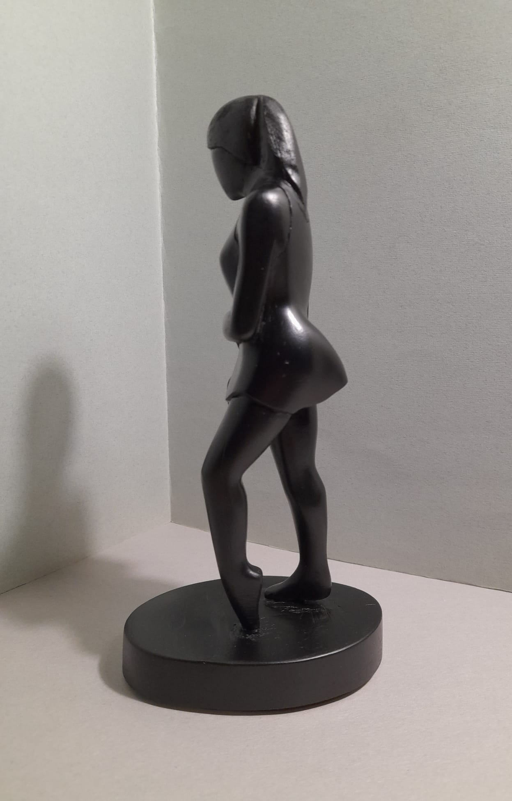
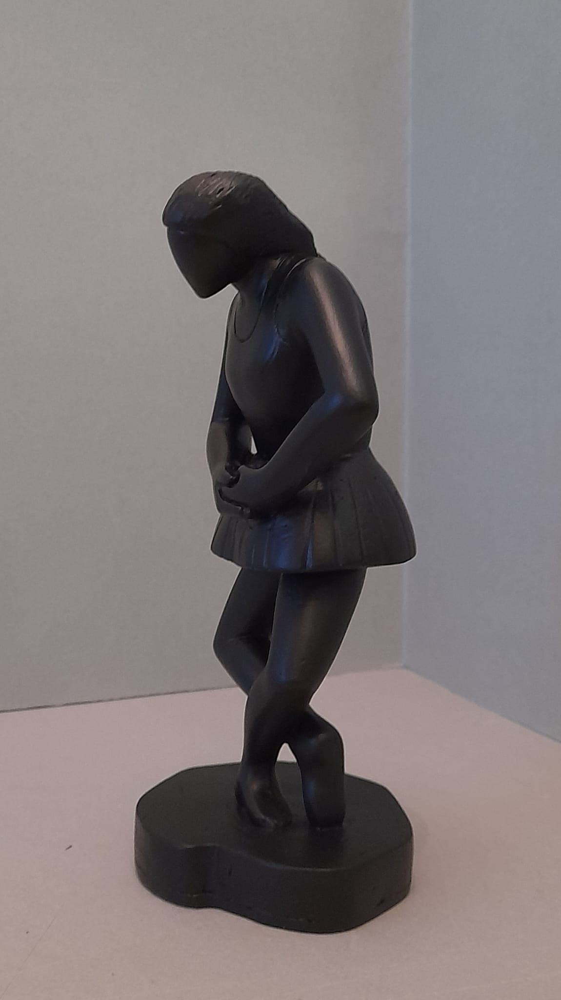
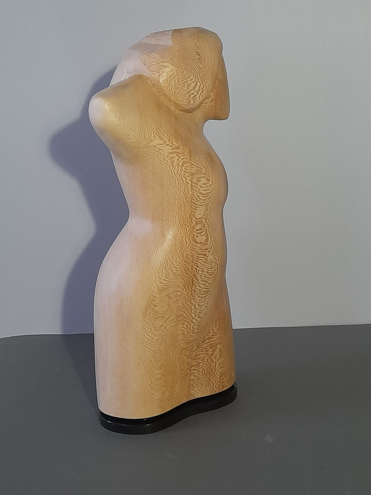

Opere tridimensionali
Il corpo nello spazio. Le sculture di Stefano Bianchi indagano la forma umana attraverso il bronzo e la terracotta, ricercando nell'essenziale la verità della figura.
La scultura ha sempre occupato un posto centrale nella ricerca di Stefano Bianchi. Formatosi alla tradizione della scultura figurativa veneziana, ha sviluppato nel tempo un approccio che riduce la forma al suo nucleo essenziale, eliminando ogni decorazione superflua per far emergere la verità gestuale e strutturale del corpo umano.
Lavora principalmente in bronzo e terracotta — materiali che hanno memoria, che mantengono l'impronta del gesto dell'artista, la pressione di un pollice, la traccia di un utensile. Le sue figure sono sintetiche ma mai fredde: c'è sempre una tensione vitale, un movimento incompiuto che sollecita lo spettatore a completare mentalmente l'azione.
Il soggetto ricorrente è la figura femminile: non come oggetto estetico, ma come archetipo del movimento, della grazia e della forza. Le donne di Bianchi camminano, si girano, si raccolgono in se stesse — sempre in uno stato di transizione, mai statiche.
Questo approccio richiama la grande tradizione della scultura italiana del Novecento — da Manzù a Fontana — pur mantenendo un carattere fortemente personale, riconoscibile nella sintesi formale e nella qualità della superficie patinata che assorbe e riflette la luce in modo quasi pittorico.
Ogni scultura nasce da una serie di bozzetti in creta o argilla, modellati direttamente a mano nello studio veneziano. La fase di fusione in bronzo — affidata a fonderie artigianali del Veneto — viene seguita personalmente dall'artista, che supervisiona la patinatura finale per ottenere quella caratteristica superficie scura, quasi vellutata, che contraddistingue il suo lavoro scultoreo.



Ogni opera nasce come bozzetto in argilla, modellata a mano nello studio veneziano. Il contatto diretto con il materiale grezzo è per Bianchi il momento più autentico del processo creativo.
La fusione è affidata a fonderie artigianali del Veneto, con cui l'artista mantiene un rapporto di collaborazione stretto. Bianchi supervisiona ogni fase della colata e della rifinitura.
La fase di patinatura è forse la più delicata: ossidi e acidi applicati a caldo conferiscono alla superficie quella caratteristica tonalità scura che assorbe la luce come velluto e racconta il tempo.